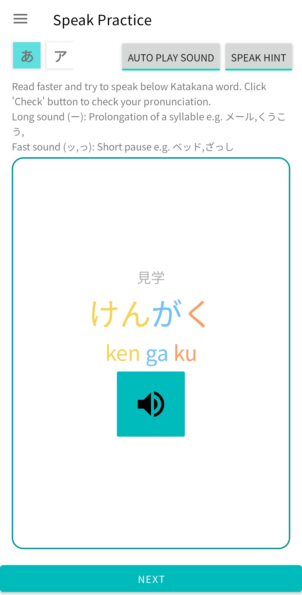
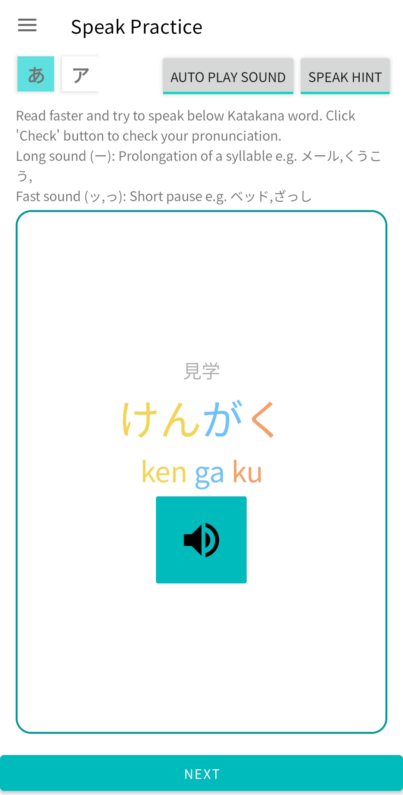

(آخر تحديث في2024/10/18) من بين العديد من القنوات لتعلم اللغة اليابانية، قمنا باختيار تطبيق رائع لتعلم اليابانية يمكن أن يساعدك في إتقان الهيراغانا والكاتاكانا، ويوفر الدعم في رحلتك لتعلم اليابانية بشكل ذاتي. بغض النظر عن مستوى إتقانك الحالي للغة اليابانية، سيصبح هذا التطبيق مساعدًا مفيدًا في مسار دراستك الذاتية، مما يجعل تعلم اليابانية أكثر سهولة ومتعة!
طريقة تعلم اليابانية تشهد ثورة. مع التطور السريع للتكنولوجيا، تتغير أيضًا أساليب تعلم اللغات. من بين العديد من طرق التعلم، أصبح استخدام التطبيقات المصممة خصيصًا لتعلم اليابانية الخيار المفضل للناس العصريين. لا توفر هذه التطبيقات مرونة عالية فحسب، بل يمكنها أيضًا تخصيص خطط التعلم وفقًا للاحتياجات الفردية، مما يجعل تعلم اليابانية أكثر كفاءة وإثارة من خلال تمارين تفاعلية غنية وتعليقات فورية. أينما كنت، طالما لديك هاتف في يدك، يمكنك تعلم اليابانية في أي وقت ومن أي مكان. هذه الطريقة في التعلم تناسب بشكل خاص أنماط الحياة الحديثة المزدحمة، مما يسمح بتعلم اليابانية دون أن تكون مقيدًا بالوقت والمكان.
تطبيق سهل الاستخدام للمبتدئين: كانا سبيد
هل لست مألوفًا مع الهيراغانا والكاتاكانا والكانجي والأصوات المنطوقة والأصوات المختصرة؟ هل سمعت كلمة يابانية لكنك لا تستطيع تذكر نطقها وكتابتها بسرعة؟ لا تمتلك دفاتر مناسبة للرجوع إليها وممارستها؟ هل تجد صعوبة في تذكر كيفية حفظ الـ"غوجوون" (الأبجدية اليابانية) بمفردك؟ هل تتساءل كيف يمكنك تعلم اليابانية باستخدام الـ"غوجوون" بمفردك؟

من خلال أساليب تدريس شاملة مثل القراءة الصامتة، القراءة، الكتابة، تمارين النطق، توفير بطاقات دفترية لممارسة الكتابة، جداول كاملة للـ"غوجوون" بترتيب الـ"غوجوون"، جداول نطق الهيراغانا والكاتاكانا للرجوع إليها، تعمق هذه الجداول والمواد التعليمية فهمك وذاكرتك للـ"غوجوون". الـ"غوجوون" يشبه الأبجدية في اليابانية. لا تحتاج لحفظها لتعلم اليابانية. بعد إتقان الـ"غوجوون"، ستتمكن بسهولة من فهم اللغة اليابانية! من خلال القراءة الصامتة الأساسية وتمارين كتابة الخط، عزز ذاكرتك ومهارات الكتابة، مما يجعل دراسة اليابانية الذاتية سهلة وسريعة.
 

【ميزات "KanaSpeed"】
1. قائمة كاملة بالأصوات الخمسين: توفر مخططًا كاملًا للأصوات الخمسين، بما في ذلك جداول الهيراغانا والكاتاكانا، حيث تقدم جميع حروف الأصوات الخمسين بوضوح، بما في ذلك الكتابة والنطق للمقاطع اليابانية الخمسين، بالإضافة إلى الهيراغانا والكاتاكانا المقابلة، وأصواتها الم voiced، semi-voiced، والمختصرة، مما يتيح لك عرض وتعلم كل شيء بسرعة، مما يساعدك على إتقان نطق وكتابة كل مقطع بسرعة.
2. خط الهيراغانا للأصوات الخمسين: يوفر تعليمات للكتابة وأوراق خط رائعة، مما يتيح لك حفظ أشكال كتابة كل حرف بسهولة من خلال ممارسة الكتابة على أوراق الخط، مع توجيه للنطق والترتيب أثناء الكتابة، استعدادًا للتدريب على الإملاء في المستقبل.
3. التعرف على الأصوات الخمسين للكانا: لا حاجة لحفظ القواعد المساعدة، أوضاع ممارسة ممتعة، مقترنة بجدول كامل للكانا للمقارنة، مما يتيح لك التعرف بسرعة على الهيراغانا والكاتاكانا، والدراسة الذاتية لتمييز النطق الصحيح لكل صوت ياباني. لا حاجة لكيبورد ياباني.
4. إملاء الكانا للأصوات الخمسين: بعد الممارسة على أوراق الخط، يمكنك ممارسة الإملاء من خلال الحفظ، مما يساعدك على حفظ الكانا اليابانية بشكل أعمق وأكثر شمولًا والتعرف على أشكال الكتابة ونطق الأصوات الخمسين، مما يعزز معرفتك وتأقلمك مع الكتابة من خلال الإملاء.
5. اختبار: يقيس مدى معرفتك الأساسية بحروف الأصوات الخمسين، من خلال ممارسة الإملاء والكتابة.
يساعدك "KanaSpeed" على بناء أساس قوي في اللغة اليابانية حتى عند الدراسة الذاتية، مما يمكنك من إتقان الأساسيات بسرعة وتحقيق أهداف تعلمك للغة اليابانية!
اسم التطبيق: KanaSpeed
الجمهور المستهدف: المبتدئين في اللغة اليابانية
اللغة: العربية لإنجليزية، مع دعم متعدد اللغات
تقييم التوصية:
رابط التنزيل: رابط Google Play

سواء كنت طفلًا أو طالبًا، تتعلم اللغة اليابانية بنفسك أو تحت إشراف معلم ياباني، يتيح لك هذا البرنامج تعلم اللغة اليابانية دون الحاجة للحفظ. إنه أداة ضرورية للدراسة الذاتية للمبتدئين في اللغة اليابانية مثلك! بعد تنزيل هذا البرنامج البسيط "KanaSpeed"، سيساعدك ترتيب الكتابة، وكتابة الشخصيات، والنسخ، والتعرف، والاستماع إلى النطق على التعرف بسرعة على 50 حرفًا أساسيًا من الكانا!